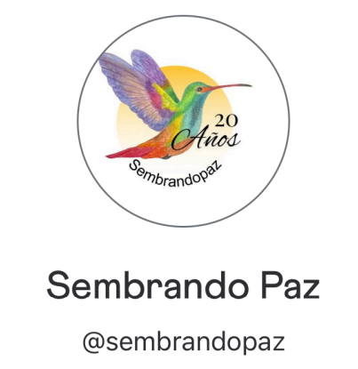

Ways to give
At Sembrandopaz, we are honored to have friends worldwide who support our mission. To make giving more accessible for our international community, the U.S.-based NGO Friends of Sembrandopaz (FOS) facilitates donations to our organization.
While FOS is a legally separate entity, we work closely together through strategic grant agreements to ensure your support reaches our programs. As a registered 501(c)(3) nonprofit in the United States, all gifts made through FOS are tax-deductible. When making your contribution, please indicate your support for Sembrandopaz. Thank you for being a vital part of our journey!
Donate through the following links, depending on the currency and applications that work best for your needs:
